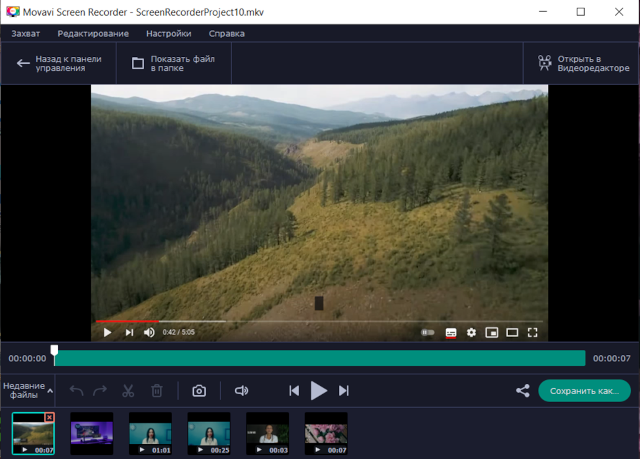
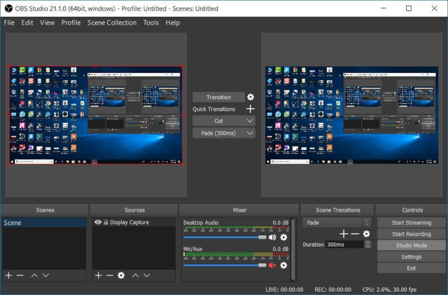
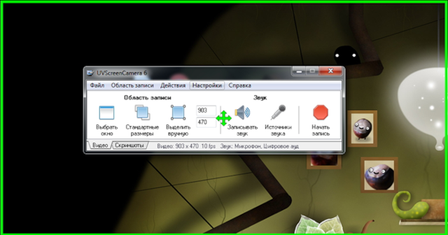
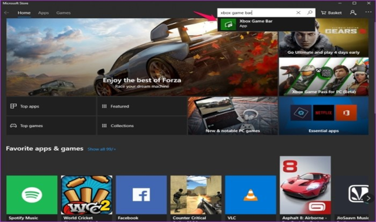

Тематика: Программы на компьютер для захвата экрана на Windows 10 и других версиях. Возможности софта, область применения, преимущества и недостатки каждой программы. Выбор лучшей платформы для записи обучающего, рабочего видеоконтента и игр.
Оптимальные способы записи видео с экрана
В XXI веке человек стал частью интернета, в сетевом пространстве он работает, общается и развлекается. Ежедневно на экране его компьютера возникает масса интересных и важных моментов, которые нужно запечатлеть. На этом фоне запись экрана является удобной функцией, с ее помощью сохраняют видео вебинара, игры, встречи с коллегами или друзьями.
Разработчики предлагают несколько программ для видеозахвата и сохранения файлов на рабочий стол. Рассмотрим их функционал, достоинства и недостатки.
Программа https://www.movavi.ru/screen-capture/ Movavi Screen Recorder функционирует на платформах Windows и macOS, оптимальна для записи видео с экрана, в том числе с функцией отложенного старта.
Сервис подходит для записи потокового видео, видеозахвата деловых переговоров и уроков. В Movavi редактируют контент, добавляют видеоэффекты, применяют фильтры. По окончании работы пользователь имеет возможность сохранить файлы в любом удобном ему формате: разместить в облаке или YouTube.

Плюсы и минусы:
● совместимость с любыми платформами, отсутствие вирусов и сбоев в работе;
● гибкий инструмент с понятным интерфейсом: работа со всем экраном или с его областью;
● дополнительные опции: хромакей и замедленная съемка, оцифровка MiniDV и VHS-кассет.
Минусы:
● платная программа, бесплатная версия имеет ограниченный срок действия;
● скачивание программы с непроверенных источников нередко приводит к загрузке ненужного софта.
OBS Studio
Программный продукт https://obsproject.com/ OBS Studio поддерживает ведение прямых трансляций и их захват в один видеопоток. OBS Studio функционирует на ноутбуках и ПК с ОС Windows, macOS, Linux (.deb). Софт разработан для геймеров и участников киберспортивных состязаний.
Бесплатная программа предоставляет возможность записи видеопотока со звуком, одновременно записывает потоки с камеры компьютера и игры.

Плюсы:
● не тормозит во время игры;
● наличие редактора, оснащенного базовыми опциями;
● оптимизированная панель настроек, контроль уровня шума.
Минусы:
● сложный интерфейс для новичков, требуется изучение инструкции;
● не всегда корректно обновляется, плохо работает техподдержка.
UVScreenCamera
Софт http://uvsoftium.ru/products/uvscreencamera UVScreenCamera —лучший выбор для тех, кому требуется сделать скринкаст, трансляцию урока или конференции в режиме реального времени.
Программа работает на платформе Windows, позволяет захватывать на мониторе видео со звуковым сопровождением или без него. Можно использовать инструменты для рисования, действия мыши и клавиатуры наглядно обозначены на экране.

Плюсы:
● запись звук отдельно от видео;
● предусмотрены раздельные вкладки для обработки видео и скриншотов;
● встроенная функция защиты от копирования при сохранении файла.
Минусы:
● перегруженность функциями, что не позволяет вовремя найти нужную;
● иногда тормозит, техподдержка отвечает не сразу.
Game Bar
Это одна из множества функций ОС Windows, которая дает возможность записывать контент и делать скриншоты без скачивания стороннего софта. Встроенная платформа предназначена в основном для записи контента из онлайн-магазина Microsoft. Совмещается с популярными игровыми приложениями в полноэкранном режиме.

Плюсы:
● бесплатное приложение, понятный интерфейс;
● управление музыкальным контентом при помощи плагина Spotify;
● возможность сделать снимки экрана с сохранением их в отдельную папку.
Минусы:
● не до конца отлажены все функции, не работает на слабых ПК;
● не подойдет в качестве рабочего инструмента для записи деловых встреч или вебинаров.
Итог
Вниманию пользователей предоставлены варианты электронных платформ для записи и сохранения видеоконтента. Какой из них выбрать, решать пользователю. Для новичков, отдающих предпочтение играм, подойдут Game Bar и OBS Studio. Для тех, кто хочет потренироваться в записи видео лучше скачать программу UVScreenCamera. Пользователям, которые проходят дистанционные курсы обучения или работают в удаленном режиме, рекомендуется установить профессиональное программное обеспечение Movavi Screen Recorder.